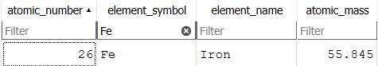

In this lesson we will take a brief look at updating and deleting data in a database of the Periodic Table of Elements as it was in 1900. We will cover the following:
 The Periodic Table and
Databases: Embracing Change and Deletion
The Periodic Table and
Databases: Embracing Change and Deletion
The periodic table, that iconic chart of elements, and a database, a structured set of data, might seem like disparate entities, yet they share a common need for updates and deletions to maintain accuracy and relevance.
Just as the periodic table has undergone numerous transformations throughout its history, with new elements being discovered and added, and occasionally, elements being removed when further research reveals their true nature or lack of existence, a database also requires adjustments to reflect changes in the real world.
Imagine a database of car inventory. If the price of a car changes or a car is sold, the database needs to be updated to reflect these changes. Similarly, if an element's atomic weight is revised or an element is removed from the periodic table, the corresponding database of elements needs to be updated to maintain its accuracy.
The UPDATE statement is used to modify existing records
in a table. It allows you to change the values of one or more
columns in a row based on a specified condition. Let's look at some
examples with reference to the Periodic Table database:
 Task: Explore the Periodic
Table as it was in 1900
Task: Explore the Periodic
Table as it was in 1900
Now that we have explored the data we can begin to update it. Let's explore how the UPDATE keyword works in SQL.
The UPDATE Statement
The UPDATE statement is
used to modify existing records in a table. It allows you to
change the values of one or more columns in a row based on a
specified condition.
The basic syntax for the
UPDATE statement is as follows:
UPDATE table_name
SET column1 = value1, column2 = value2, ...
Where condition;
The UPDATE statement consists of three main parts:
UPDATE keyword is followed by the name of the
table you want to update.
SET keyword is used to specify the
columns you want to update and the
new values you want to assign to them.
WHERE clause is used to specify the condition
that must be met for the records to be updated. If you
omit the
WHERE clause,
all records in the table will be
updated.
Well start with a guided example using the Execute SQL tab in DB Browser
Task: Update the Atomic Mass
of Iron (FE)
1900: The atomic mass of iron was generally accepted to be around
56.
Present Day: The IUPAC currently lists the standard
atomic weight of iron as [55.845(2)]. This more precise value
reflects a weighted average of iron's isotopes, taking into
account their natural abundance.
UPDATE periodic_table_1900
SET atomic_mass = 55.845
WHERE element_symbol = 'Fe';To this...
Now that we have updated the atomic mass of Iron, have a go revising some of the other elements in the Periodic Table database.
Task: Update the other
elements
Using the same syntax as above, update the the periodic table to reflect the following changes. Remember, use a look, cover, query, check approach.
UPDATE periodic_table_1900 SET atomic_mass = 114.8 WHERE element_symbol = 'In';UPDATE periodic_table_1900 SET atomic_mass = 192.2 WHERE element_symbol = 'Ir';UPDATE periodic_table_1900 SET atomic_mass = 58.6934 WHERE element_symbol = 'Ni';UPDATE periodic_table_1900 SET element_symbol = 'Nb', element_name = 'Niobium' WHERE element_symbol = 'Cb';
The DELETE statement is used to remove unwanted records
from a table. It allows you to delete one or more rows based on a
specified condition.
The DELETE Statement
The DELETE statement is
used to remove unwanted records from a table. It allows you to
delete one or more rows based on a
specified condition.
The basic syntax for the
DELETE statement is as follows:
DELETE FROM table_name
WHERE condition;
The DELETE statement consists of two main parts:
DELETE keyword is followed by the
FROM keyword and the name of the
table from which you want to
delete records.
WHERE clause is used to specify the condition
that must be met for the records to be deleted. If you
omit the
WHERE clause,
all records in the table will be
deleted.
Let's practice deleting records from the Periodic Table database.
Task: Remove the element
Didymium (Di)
Didymium was once thought to be an element, but it was later discovered to be a mixture of the elements praseodymium and neodymium. Let's remove Didymium from the Periodic Table database.
DELETE FROM periodic_table_1900 WHERE element_symbol = 'Di';Now that you have successfully removed Didymium from the Periodic Table database, have a go at removing some of the other elements.
Task: Remove the imposter
elements
Ok - confession time. I struggled to find other elements that needed removing so I made some up!
DELETE FROM periodic_table_1900 WHERE element_name = 'Lovelacium';DELETE FROM periodic_table_1900 WHERE element_name = 'Hopperium';DELETE FROM periodic_table_1900 WHERE element_name = 'Babbagium';Now that you have learned how to update and delete records in a database using SQL, you can apply this knowledge to Python.
The best way to learn about this, is to see it in action.
Task: Run the Python script
In this lesson, you learned how to update and delete records in a
database using SQL. You explored the UPDATE and
DELETE statements and practiced using them to modify
and remove records from the Periodic Table database. You also
applied this knowledge to Python by running a script that updates
and deletes records in the database.